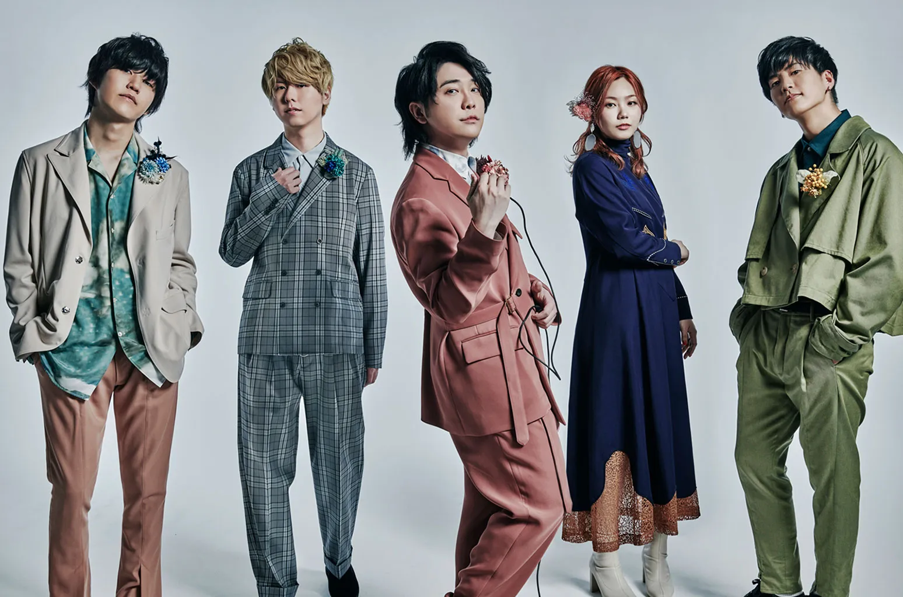

JPOP
Japanese Pop music is my all time favorite genre of music. I have been listening to it frequently since the age of 12 and roughly 80% of my music is in Japanese. Not only do I love the language (learned quite a bit)\ but I've learned a lot about the culture as well. My favorite singer Ado (picture above), sings a lot of JPOP music, and can sing in powerful vocal ranges that I love.
KPOP
Korean Pop is another popular genre that I also fell in love with around the age of 12 as well. I really enjoy a lot of the dances in these songs as they tend to be rather complex and high energy! I am also very into Korean culture and I primarily cook traditional Korean dishes at home.
JROCK
Japanese rock music is something that I am quite passionate about. In fact, it was one of the genres that made me want to learn to play guitar! Mrs. Green Apple is one of my favorite groups and they have a huge slew of appealing music. This is also one of those genres that you will catch me singing to frequently.